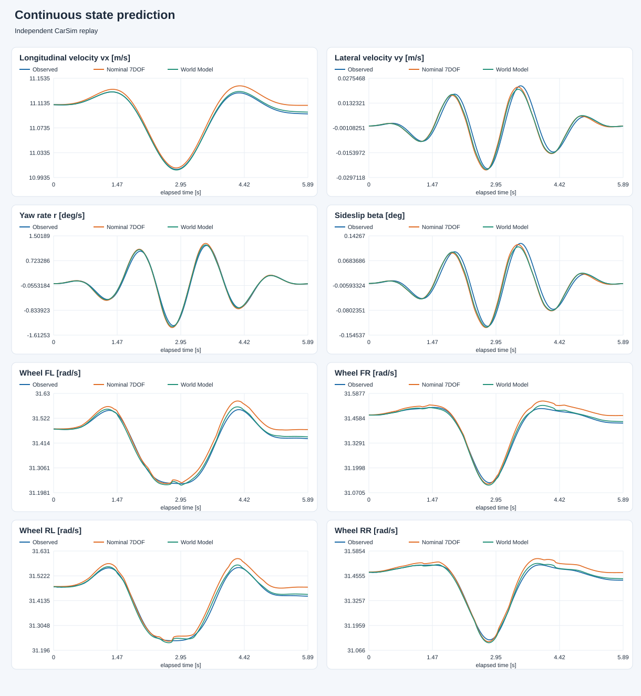
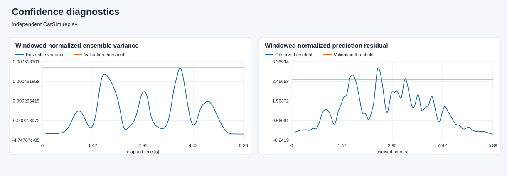

Independent CarSim replay
使用独立测试轨迹；误差与门控结论限于本次数据。
轨迹：carsim_experimental_test · 名义 μ=0.8 · 50 个 1 s 滚动窗口。完整指标见 evaluation.json。
从历史窗口结束时的共同状态出发，此后不重置状态。使用记录的实际输入，超出模型适用域时曲线停止。

残差在下一观测到达后计算；阈值来自独立名义验证集。

有效覆盖率：100.0%
| 状态 | 原 7DOF | World Model | 保持当前状态 |
|---|---|---|---|
| vx_m_s | 5.02728e-05 | 4.84696e-05 | 0.000689897 |
| vy_m_s | 0.000384408 | 0.000297539 | 0.000437796 |
| yaw_rate_rad_s | 0.000158392 | 0.000115788 | 0.000403937 |
| omega_fl_rad_s | 0.00842459 | 0.00706468 | 0.00199026 |
| omega_fr_rad_s | 0.00855426 | 0.0072118 | 0.00238543 |
| omega_rl_rad_s | 0.00628901 | 0.00555174 | 0.00199573 |
| omega_rr_rad_s | 0.00630406 | 0.00543042 | 0.00239509 |
五成员残差 MLP；历史输入不包含真实路面附着。当前未生成 SE 恢复标签、训练 Risk Network 或接管 NMPC。